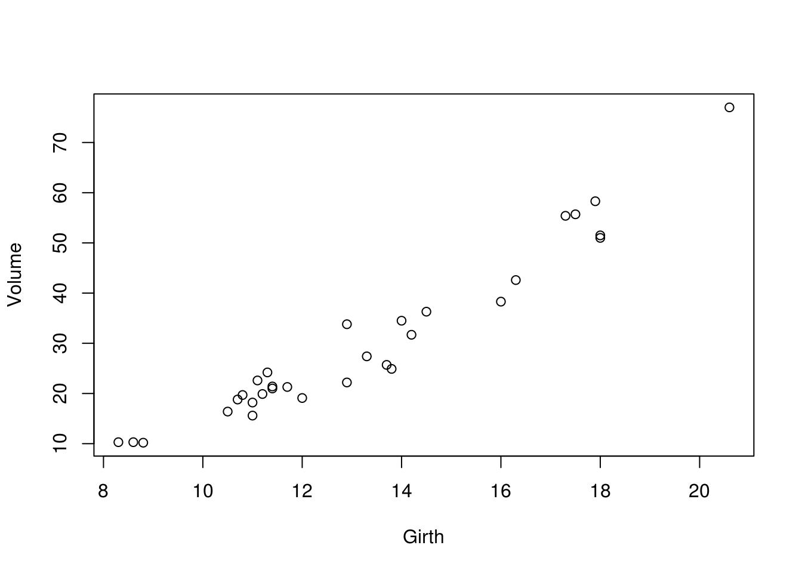
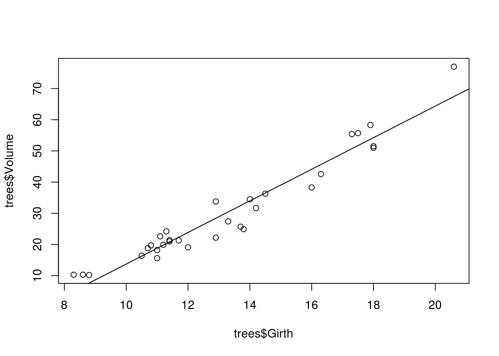
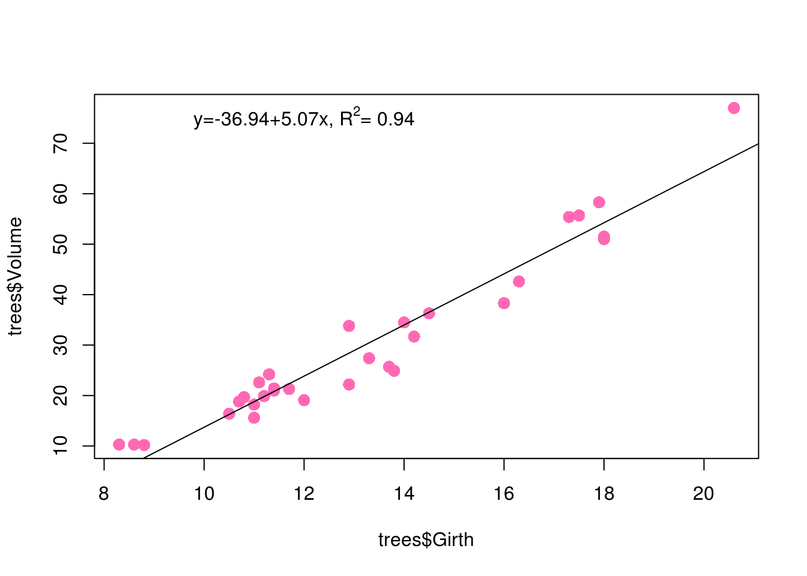
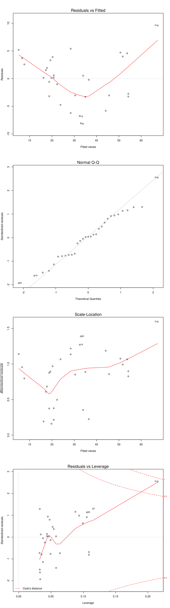
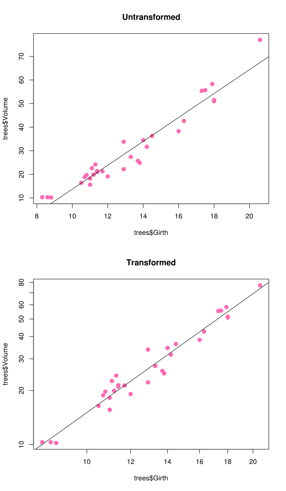
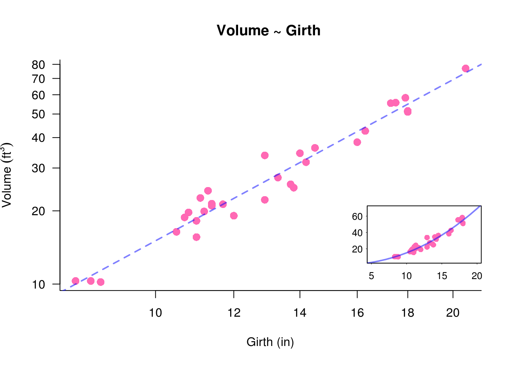
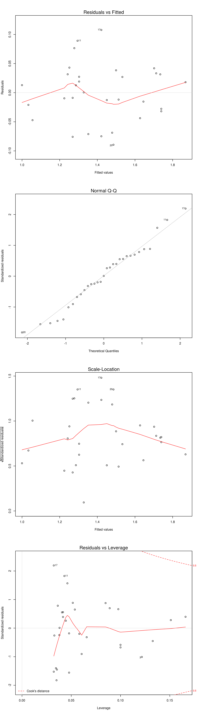

Chapter 11 Linear regression
Linear regression can be completed in a similarly uncomplicated way in R. In this example, we will revisit the trees dataset we used earlier
trees## Girth Height Volume
## 1 8.3 70 10.3
## 2 8.6 65 10.3
## 3 8.8 63 10.2
## 4 10.5 72 16.4
## 5 10.7 81 18.8
## 6 10.8 83 19.7
## 7 11.0 66 15.6
## 8 11.0 75 18.2
## 9 11.1 80 22.6
## 10 11.2 75 19.9
## 11 11.3 79 24.2
## 12 11.4 76 21.0
## 13 11.4 76 21.4
## 14 11.7 69 21.3
## 15 12.0 75 19.1
## 16 12.9 74 22.2
## 17 12.9 85 33.8
## 18 13.3 86 27.4
## 19 13.7 71 25.7
## 20 13.8 64 24.9
## 21 14.0 78 34.5
## 22 14.2 80 31.7
## 23 14.5 74 36.3
## 24 16.0 72 38.3
## 25 16.3 77 42.6
## 26 17.3 81 55.4
## 27 17.5 82 55.7
## 28 17.9 80 58.3
## 29 18.0 80 51.5
## 30 18.0 80 51.0
## 31 20.6 87 77.0Now let us assume that there is likely to be a correlation between Girth and Volume, and we want to examine this with a linear model.
We start by plotting the data
with(
trees,
plot(
x = Girth,
y = Volume
)
)
So it looks like there is a positive relationship…let’s explore this with linear regression. We specify a model formula of Volume ~ Girth, which means Volume is dependent on Girth.
model <- lm(
formula = Volume ~ Girth,
data = trees
)We must call the results of the test with summary.
summary(model)##
## Call:
## lm(formula = Volume ~ Girth, data = trees)
##
## Residuals:
## Min 1Q Median 3Q Max
## -8.065 -3.107 0.152 3.495 9.587
##
## Coefficients:
## Estimate Std. Error t value Pr(>|t|)
## (Intercept) -36.9435 3.3651 -10.98 7.62e-12 ***
## Girth 5.0659 0.2474 20.48 < 2e-16 ***
## ---
## Signif. codes: 0 '***' 0.001 '**' 0.01 '*' 0.05 '.' 0.1 ' ' 1
##
## Residual standard error: 4.252 on 29 degrees of freedom
## Multiple R-squared: 0.9353, Adjusted R-squared: 0.9331
## F-statistic: 419.4 on 1 and 29 DF, p-value: < 2.2e-16So we get quite a lot of output…
First we are reminded of the model we called:
model$call## lm(formula = Volume ~ Girth, data = trees)Then we get some summary information from the residuals - the minimum, maximum, median, and the 1st and 3rd quartiles. Remember that our residuals should be normally distributed in a regression model, so we can get an initial idea of whether this is so from this summary:
summary(model$residuals)## Min. 1st Qu. Median Mean 3rd Qu. Max.
## -8.065 -3.107 0.152 0.000 3.495 9.587Then we get the juicy stuff…
(summary(model))$coefficients## Estimate Std. Error t value Pr(>|t|)
## (Intercept) -36.943459 3.365145 -10.97827 7.621449e-12
## Girth 5.065856 0.247377 20.47829 8.644334e-19First we get the model coefficients. Note that the name of the response variable (Volume) has been replaced with (Intercept), and the first value immediately to the right of this is the intercept of our regression line. The number beneath this is the slope of our regression line - hence these two can be considered as α and β in the equation y = α + βx
Hence we can use them to plot the regression line represented by the model with:
plot(
x = trees$Girth,
y = trees$Volume
)
abline(
a = coef(model[1]),
b = coef(model[2])
)
# Or more simply:
abline(model)
We also get the results from t-tests on the two variables:
(summary(model))$coefficients## Estimate Std. Error t value Pr(>|t|)
## (Intercept) -36.943459 3.365145 -10.97827 7.621449e-12
## Girth 5.065856 0.247377 20.47829 8.644334e-19The number of interest to us is <0.00276**, which tells us that there is a significant correlation (which is positive because the t value 3.272 is also positive) between Volume and Girth
Other pertinent information is the r-square (R2) and adjusted-r-squared values (R2). If you don’t know what these are you should look them up: http://en.wikipedia.org/wiki/R-squared.
If we want to include this information on the graph, we can:
plot(
x = trees$Girth,
y = trees$Volume,
pch = 16,
col = "hotpink",
cex = 1.4
)
abline(model)
formula_text <- paste(
"y=",
round(coef(model)[1],2),
"+",
round(coef(model)[2],2),
"x, ",
sep=""
)
rsquared_text = paste(
"=",
round(
(summary(model))$r.squared
,2
)
)
text(
substitute(
paste(ft, R^2, rt),
list(ft=formula_text,rt = rsquared_text)
),
x = 12,
y = 75
)
All good - but we do need to check the model diagnostic plots to ensure that we have met the assumptions of a linear model.
par(mfrow=c(4,1))
plot(model)
par(mfrow=c(1,1))As I keep saying, this is not a statistics course. If you don’t know what you are looking at here, You should find.
These plots are discussed in the R book on p.357, but in general terms the first and third plot should should look like a sky at night, without any particular patternation - and in particular the data should not be clustered in a wedge shape. The second plot should generally follow the straight line indicated - this is the same as the qqnorm plot discussed elsewhere in the course.
11.1 Transformation
The astute amongst you may have noticed that we could improve the fit of the model by transforming the data - probably with a log transformation.
Let’s try this now:
model1 <- lm(
formula = log10(Volume) ~ log10(Girth),
data = trees
)
summary(model1)##
## Call:
## lm(formula = log10(Volume) ~ log10(Girth), data = trees)
##
## Residuals:
## Min 1Q Median 3Q Max
## -0.089464 -0.029837 0.000439 0.031523 0.107689
##
## Coefficients:
## Estimate Std. Error t value Pr(>|t|)
## (Intercept) -1.02204 0.10018 -10.20 4.18e-11 ***
## log10(Girth) 2.19997 0.08983 24.49 < 2e-16 ***
## ---
## Signif. codes: 0 '***' 0.001 '**' 0.01 '*' 0.05 '.' 0.1 ' ' 1
##
## Residual standard error: 0.04993 on 29 degrees of freedom
## Multiple R-squared: 0.9539, Adjusted R-squared: 0.9523
## F-statistic: 599.7 on 1 and 29 DF, p-value: < 2.2e-16Yes, the R-squared is slightly better than with the transformed model. Now let’s reproduce the plot, this time with log10 transformed axes:
par(mfrow=c(2,1))
plot(
x = trees$Girth,
y = trees$Volume,
pch = 16,
col = "hotpink",
cex = 1.4,
main = "Untransformed"
)
abline(model)
plot(
x = trees$Girth,
y = trees$Volume,
pch = 16,
col = "hotpink",
cex = 1.4,
log = "xy",
main = "Transformed"
)
abline(model1)
par(mfrow=c(1,1))A nice touch when plotting data on transformed axes, is to produce a plot of the original data within the first plot with the model line plotted untransformed.
# Create intial plot
plot(
x = trees$Girth,
y = trees$Volume,
pch = 16,
col = "hotpink",
cex = 1.4,
log = "xy",
main = "Volume ~ Girth ",
bty = "l",
xlab = "Girth (in)",
ylab = bquote(Volume~(ft^3)),
yaxt = "n"
)
axis(
side = 2,
las = 2
)
# Plot regression line
abline(
model1,
lty = 2,
lwd = 2,
col = rgb(0,0,1,0.5)
)
# Set up graphical parameters for sub plot see ?par
par(
fig = c(0.6,1,0.075,0.6),
new = T,
bty = "o",
cex.axis = 0.8,
cex.lab = 0.8,
mgp = c( 1.95, 0.3, 0),
tck = -0.02
)
# Plot sub plot
# Note that x and y axes have been suppressed, as have annotations
plot(
x = trees$Girth,
y = trees$Volume,
pch = 16,
col = "hotpink",
ann = FALSE,
xlim = c(5,20),
ylim = c(5,70),
xaxt = "n",
yaxt = "n"
)
# Use predict to calculate the untransformed model. Note the untf=T
lines(
10 ^ predict(
model1,
list(Girth = 1:50),
untf = T
),
lty = 1,
lwd = 2,
col = rgb(0,0,1,0.5)
)
# Add x-axis
axis(
side=1,
at = seq(0,20,5),
lwd = 0.5
)
# Add y-axis
axis(
side = 2,
at = seq(0,100,20),
las = 2,
lwd = 0.5
)
# Reset the plotting parameters
par(
fig=c(0,1,0,1),
new = F
)Finally, we should check the model assumptions again…
par(mfrow=c(4,1))
plot(model1)
par(mfrow=c(1,1))The diagnostic plots seem to be a little better for the transformed data. Hence it seems like a justified choice to transform the data.